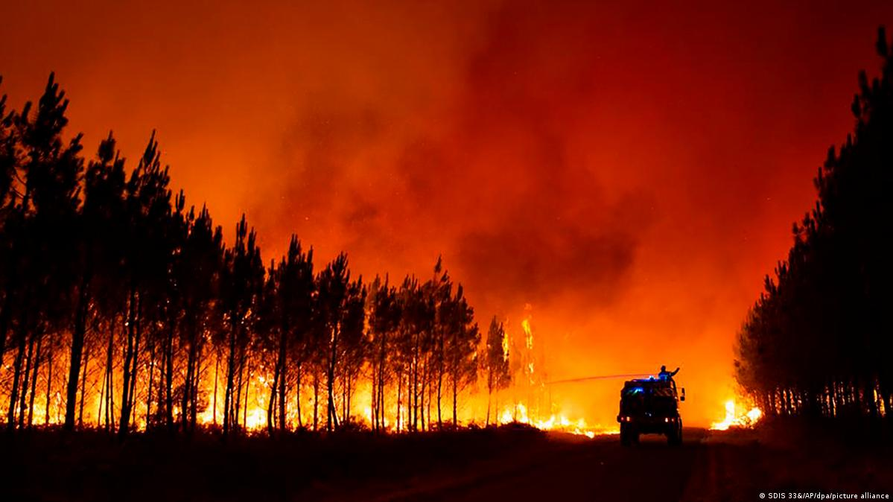

Mengapa Saya Memilih Pemanasan Global?
Akhir akhir ini saya merasa bahwa suhu/cuaca di Jakarta ini gila. Karena dapat berubah dari waktu ke waktu perubahan ini juga tidak stabil seperti jika pagi nya hujan nanti siang nya akan panass sekali. Fyi : suhu bumi 1,5 Celsius itu merupakan rekor kenaikan suhu tertinggi dalam beberapa tahun ini. Giila bukan jika naik 1.5 C sudah sepanas ini apalagi jika naik lebih tinggi lagi???
Kalian pasti juga pernah melihat ini

Di gambar diatas dapat dilihat bahwa terumbu karang yang biasanya memiliki banyak warna sekarang memutih.
“We know the biggest threat to coral reefs worldwide is climate change" - Environment Minister Tanya Plibersek said in a statement.

Kebakaran diatas juga di sebabkan oleh pemansan global